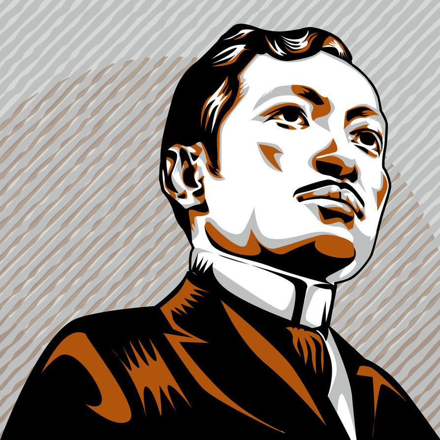

José Protacio Rizal Mercado y Alonso Realonda
A Filipino Political Leader and Author

19, 1861, Calamba, Philippines—died December 30, 1896, Manila who was an inspiration to the Philippine nationalist movement.
Here's a time line of Dr. Rizal's life:
- 1861 - Born in Calamba, Philippines
- 1864 - Learned Alphabet
- 1865 - Concepcion's death
- 1865 - 1867 - Informal education by his mother and private tutors
- 1868 - Pilgrimage to Antipolo with his Father
- 1869 - Left Calamba for Biñan, Early formal education in Biñan and he wrote his first poem "Sa Aking mga Kabata"
- 1870 - Studied under Justiniano Cruz
- 1872 - Started studying in Ateneo
- 1877 - Studied Philosopy and Letters at the University of Santo Tomas and graduated Sobre Saliente
- 1878 - Rizal took up medicine
- 1882 - Joined Circulo Hispano - Filipino he wrote "Mi Piden Versos" and first travel to Europe. Left Manila for Spain. Went to Paris. Arrived at Barcelona, Spain and Enrolled Medicine at the Universidad Central de Madrid
- 1885 - Completed Degree in Doctor of Medicine and went To Paris to study Ophthalmology
- 1886 - Rizal went to Germany and he wrote "A Las Flores de Heidelberg"
- 1887 - Noli Me Tangere was finished and begun writting his second novel
- 1889 - Pamphlet- "The Vison of Fr. Rodriguez"
- 1890 - Master of Masons
- 1892 - La Liga Filipina
- 1893 - Exile in Dapitan
- 1896 - Treason, Sedition, and Formation of Illegal Association. Death sentence notification and Rizal's execution
“One only dies once, and if one does not die well, a good opportunity is lost and will not present itself again.” ― Jose Rizal